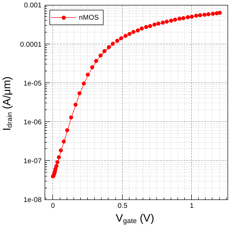
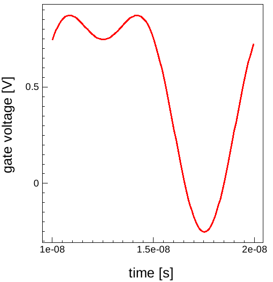
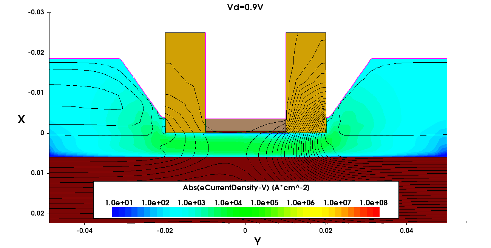

6.1 Introduction
6.2 Plotting an Id–Vg Curve
6.3 Exporting Cutline Data to an ASCII File
6.4 Calculating the Sheet Resistance
6.5 Performing Fast Fourier Transforms of Periodic Signals
6.6 Creating GIF Movies
6.7 Sentaurus Visual in Python Mode
6.8 Sentaurus Visual Python Extraction Modules and Tcl Extraction Libraries
6.9 Running Inspect Scripts
Sentaurus Visual scripting commands are built on the tool command language (Tcl) or Python and, therefore, provide a powerful and flexible way to automate tasks.
Sentaurus Visual features a large set of mathematical functions for dataset manipulation, such as differentiation, integration, and finding the minimum and maximum. In addition, a Tcl list, a Python list or 1D NumPy array can be converted into a Sentaurus Visual dataset, and the Sentaurus Visual dataset can be reconverted into a Tcl list or a 1D NumPy array, allowing for a wide range of data manipulation of TCAD results.
Almost every action performed in the user interface of Sentaurus Visual has an equivalent Tcl or Python command. The commands displayed in the Tcl or Python Console can be saved and used to create scripts.
You can start Sentaurus Visual Python in interactive mode and use the Sentaurus Visual Console as an interactive Python interpreter using the -p option.
You can execute scripting commands in Sentaurus Visual in different ways:
> svisual &Then, you can enter commands sequentially in the Console.
> svisual idvg_tcl_vis.tcl &Similarly, you can run the Python script idvg_py_vis.py as follows:
> svisual idvg_py_vis.py &As a result, the Sentaurus Visual GUI opens in the mode determined by the file extension and then it runs the script.
> svisual -bx idvg_tcl_vis.tcl
In this section, the first example plots an Id–Vg curve using a PLT file from Sentaurus Device. The second example creates a cutline on a 2D structure and saves the data to an ASCII file. The third example shows how to extract the position of the junction along a cutline of a 2D diode and to calculate the sheet resistance of the n-well. The fourth example is more advanced and discusses how to calculate the fast Fourier transform (FFT) of a periodic signal. The fifth example shows how to create GIF movies of field plots. All these examples require an understanding of basic Tcl scripting.
The files discussed in this section are part of the Sentaurus Workbench project export. The complete project can be investigated from within Sentaurus Workbench in the directory Applications_Library/GettingStarted/svisual/export.
This section discusses how to plot an Id–Vg curve using a PLT file from Sentaurus Device. This example is the first tool instance (idvg_tcl) in the Sentaurus Workbench project.
Click to view the primary file idvg_tcl_vis.tcl.
Below are explanations of the command file line by line.
set mydata [load_file @pwd@/idvg1_des.plt]
The load_file command loads all data in the idvg_des.plt file and returns the name of the dataset. By assigning a return value to the Tcl variable mydata, you can reference the loaded data in the script.
set myplot [create_plot -1d]
The create_plot -1d command creates a new empty frame for an xy plot. Setting the return value of the command to a Tcl variable myplot allows you to reference the plot at later steps of the script as you can see here.
set IdVgcurve [create_curve -plot $myplot -dataset $mydata \
-axisX "gate InnerVoltage" -axisY "drain TotalCurrent"]
set_curve_prop $IdVgcurve -plot $myplot -show_markers -markers_size 7 \
-markers_type circlef -label "nMOS"
The first command create_curve uses data from the $mydata dataset and plots it on an empty frame of plot $myplot. To set the properties of this newly created curve, again you set the results of the create_curve command to a Tcl variable. In the second command, curve attributes are modified to include a label and to show symbols.
set_plot_prop -show_grid
set_grid_prop -show_minor_lines \
-line1_style dash -line1_color #a0a0a4 \
-line2_style dot -line2_color #c0c0c0
set_axis_prop -plot $myplot -axis x -title "V<sub>gate</sub> (V)"
set_axis_prop -plot $myplot -axis y -title "I<sub>drain</sub> \
(A/<greek>m</greek>m)" -type log
set_axis_prop -plot $myplot -axis y -range {1e-08 0.001}
This section of the script changes the view of the plot. The first command switches on the grid lines. The second command sets the color grid lines to gray and light gray, and the line type to dashed and dotted lines. The next three commands set the title of the x-axis and y-axis, and the range.
export_view "n@node@_curve.png" -plots $myplot -resolution 500x500 \
-format PNG -overwrite
This command exports a plot into a graphics file in PNG format with resolution of 500 x 500 pixels.

Figure 1. Id–Vg curve created by Tcl script idvg_vis.tcl.
The files discussed in this section are part of the Sentaurus Workbench project export. The complete project can be investigated from within Sentaurus Workbench in the directory Applications_Library/GettingStarted/svisual/export.
This section discusses the third Sentaurus Visual tool instance npn. In this example, a 2D structure is cut and the cutline information is exported to a comma-separated value (CSV) file.
Click to view the primary file npn_vis.tcl.
Below are explanations of the command file line by line.
set mydata2D [load_file @pwd@/npn_msh.tdr] # create new plot set myplot2D [create_plot -dataset $mydata2D]
The first command loads the TDR file. The command returns the value of the dataset that is assigned to the Tcl variable mydata2d. The second command creates a 2D plot from the loaded dataset.
set mydata1D [create_cutline -plot $myplot2D -type x -at -0.005]
The create_cutline command creates a 1D cutline normal to the x-axis at point x=–0.005. The result of this command is a dataset that includes all fields from the original TDR file.
export_variables {DopingConcentration xMoleFraction Y} \
-dataset $mydata1D -filename "n@node@_data.csv" -overwrite
The export_variables command exports the data for the specified datasets into a text file in CSV format.
This script exports the CSV file without generating any graphical output and does not require a virtual X server. Therefore, it can be run in batch mode using the -b option:
svisual -b npn_vis.tcl
The files discussed in this section are part of the Sentaurus Workbench project export. The complete project can be investigated from within Sentaurus Workbench in the directory Applications_Library/GettingStarted/svisual/export.
This section discusses how to extract the position of the junction along a cutline of a 2D diode and to calculate the sheet resistance of the n-well. This example assumes familiarity with Tcl scripting.
This example is the fourth tool instance in the Sentaurus Workbench project.
Click to view the primary file sheet_res_vis.tcl.
Below are explanations of the command file line by line.
set dataName [load_file @pwd@/diode_des.tdr] set plotName [create_plot -dataset $dataName]
The first two commands load the TDR file and create a plot.
load_library physicalconstants set q $const::ElementaryCharge set position 10
The next block of Tcl commands initializes the variables. The value of the elementary charge is read from the library and stored in the Tcl variable q. The variable position stores the position of the cutline in micrometers.
create_field -dataset $dataName -name NetAct -function <DopingConcentration> create_field -dataset $dataName -name Cond \ -function <eDensity>*<eMobility>+<hDensity>*<hMobility>
Two new fields are created: the first one contains the net doping concentration, and the second one contains the conductance. These quantities are needed to extract the position of the junction and to evaluate the sheet resistance, respectively.
set cutline [create_cutline -plot $plotName -type x -at $position]
The create_cutline command creates a 1D cutline normal to the x-axis at point x=10 μm. The result of this command is a dataset that includes all fields from the original TDR file.
set cutplot [create_plot -dataset C1($dataName) -1d] create_curve -name NetActPlot -plot $cutplot -dataset $cutline \ -axisX Y -axisY NetAct create_curve -name CondPlot -plot $cutplot -dataset $cutline \ -axisX Y -axisY Cond create_curve -name RsheetPlot -plot $cutplot \ -function 1.0e4/($q*integr(<CondPlot>)) set_axis_prop -plot $cutplot -axis y -type log set_curve_prop NetActPlot -plot $cutplot -line_width 3 -label "Doping" set_curve_prop CondPlot -plot $cutplot -line_width 3 -label "Conductance" set_curve_prop RsheetPlot -plot $cutplot -line_width 3 -label "Sheet_Resistance"
A new empty frame for an xy plot along the cutline is created. The first two create_curve commands use data from the $cutline dataset and plot them in the empty frame. The net doping concentration and the conductance curves use the previously created fields. The third create_curve command calculates and plots the sheet resistance along the cutline. The function integr(<CondPlot>) calculates the integral of the conductance along the y-axis.
set x1 1e-10
set x2 10
set ypn "no_junction"
set datax [get_curve_data NetActPlot -axisX ]
set datay [get_curve_data NetActPlot -axisY ]
if {[lindex $datay 0]<0} {set sign -1} else {set sign 1}
for {set i 0} {$i<[expr [llength $datax] - 1]} {incr i} {
if {([lindex $datax $i]>=$x1)&&([lindex $datax $i]<=$x2)} {
if {[expr [lindex $datay $i]*$sign]<0.0} {
set ypn [lindex $datax $i]
set sign [expr -1.0*$sign]
}
}
}
The next block extracts the position of the junction along the y-axis. The variables x1 and x2 define the window where you look for the junction position. The junction is defined as the location where the net doping concentration changes sign. Therefore, a for loop goes through all of the positions along the cutline in the defined window and checks whether the net doping concentration changes its sign. If such a condition is satisfied, the junction position is stored in the variable ypn.
set Rsheety [probe_curve RsheetPlot -valueX $ypn]
Finally, the command probe_curve extracts the value of the sheet resistance at the junction.
puts "DOE: ypn [format %.2f $ypn]" puts "DOE: Rsheet [format %.2f $Rsheety]"
The calculated junction position and sheet resistance of the n-well are printed out in Sentaurus Workbench.
You can extract the junction position and sheet resistance using the Tcl extraction library procedure ExtractRsh or the Python Extraction Module function extract_rsh.
The files discussed in this section are part of the Sentaurus Workbench project export. The complete project can be investigated from within Sentaurus Workbench in the directory Applications_Library/GettingStarted/svisual/export.
This section discusses how to calculate the fast Fourier transform (FFT) of a periodic signal. Familiarity with Tcl scripting is a prerequisite.
Click to view the primary file of the FFT tool instance in the given Sentaurus Workbench project, FFT_vis.tcl.
To use the FFT algorithms in Sentaurus Visual, it is required that 2n equidistant data points are contained in the dataset and that the dataset spans one period of the signal. Even if these requirements are not fulfilled, Sentaurus Visual will return a curve, but the results cannot be interpreted in any meaningful way.
For this example, you will look at one period of a voltage waveform at a gate contact. The signal consists of a DC value of 0.5 V and sinusoidal components of 0.5*sin(ωt)+0.25*cos(2*ωt) V. Thereby, the angular frequency ω corresponds to 100 MHz. Figure 2 shows one period of that signal.

Figure 2. Voltage versus time curve to be Fourier transformed.
The following explanations describe the FFT command file line by line. To calculate the discrete Fourier transformation of that signal, first the values are read from a Sentaurus Device .plt file and the signal curve is created:
load_file transient.plt -name "ACdata"
create_plot -1d -name "FFT"
link_plots "FFT" -unlink
create_curve -name signal -plot "FFT" -dataset "ACdata" \
-axisX "time" -axisY "gate InnerVoltage"
From the signal curve, you obtain a list tlist with the time data points. This list is used to extract information about the period length, the number of data points, and the time interval between points. This information will be used later for normalization purposes:
set tlist [get_variable_data "time" -dataset "ACdata"] set np [llength $tlist] ;#number of data points set t0 [lindex $tlist 0] ;#start time set dt [expr [lindex $tlist 1]-$t0] ;#time step set t1 [expr [lindex $tlist end]+$dt] ;#end time of period set tp [expr $t1-$t0] ;#period duration set fper [expr 1.0/$tp] ;#period frequency set fmax [expr 1.0/$dt] ;#max representable frequency set anorm [expr 1.0/double($np)] ;#normalization
Before the calculation of the FFT, you check whether the number of data points fullfils the requirement that 2n data points represent the signal and that the data points are equidistant in time:
if { [expr fmod(log($np)/log(2.0),1)] > 1e-16 } {
puts "number of data points not 2^n" ; exit
}
set tol [expr $dt*1e-12]
for { set it 1 } { $it < $np } { incr it } {
set tp1 [lindex $tlist $it] ; set tp0 [lindex $tlist [expr $it-1]]
if { [expr abs($tp1-$tp0-$dt)] > $tol } {
puts "data points are not equidistant"; exit
}
}
The real and imaginary parts of the Fourier tranform are now calculated from the signal curve <signal>. Then, the signal curve is removed:
create_curve -name ffre -plot "FFT" -function "fftre(<signal>)" create_curve -name ffim -plot "FFT" -function "fftim(<signal>)" remove_curves "signal"
Figure 3 shows the resulting Fourier coefficients.
Figure 3. Fourier coefficients of the real (cos) and imaginary (sin) FFT. The coefficients are indexed from 0 to n–1. Here n=128, which is the number of equidistant data points in the signal curve. (Click image for full-size view.)
After some self-explanatory settings of plot properties in Figure 3, the FFT curve data is exported to a file for later use:
export_curves {ffre ffim} -plot "FFT" -filename ./FFTdata.plx -format plx \
For a normalized representation, you reorder the coefficients, normalize the amplitude, and assign frequencies to the coefficient number. To that end, you extract coefficient numbers as well as real and imaginary FFT data to lists:
set freqs [get_curve_data ffre -plot "FFT" -axisX] set fftr [get_curve_data ffre -plot "FFT" -axisY] set ffti [get_curve_data ffim -plot "FFT" -axisY]
Using the symmetry of the Fourier transform, you map the coefficients above the Nyquist frequency to the negative frequency branch. The frequencies associated with the coefficient number are calculated from the signal period and the number of data points:
set frequency [list]
set RePart [list]
set ImPart [list]
set AbsPart [list]
set nNyq [expr $np/2.0]
foreach freq $freqs ffr $fftr ffi $ffti {
if { $freq > $nNyq } {
lappend frequency [expr $freq*$fper-$fmax]
lappend RePart [expr $ffr*$anorm]
lappend ImPart [expr $ffi*$anorm]
lappend AbsPart [expr $anorm*sqrt($ffr*$ffr + $ffi*$ffi)]
}}
foreach freq $freqs ffr $fftr ffi $ffti {
if { $freq <= $nNyq } {
lappend frequency [expr $freq*$fper]
lappend RePart [expr $ffr*$anorm]
lappend ImPart [expr $ffi*$anorm]
lappend AbsPart [expr $anorm*sqrt($ffr*$ffr + $ffi*$ffi)]
}}
For the resulting values, you create variables for a new dataset:
create_variable -name "frequency" -dataset "FFTdata" -values $frequency create_variable -name "real_part" -dataset "FFTdata" -values $RePart create_variable -name "imag_part" -dataset "FFTdata" -values $ImPart create_variable -name "magnitude" -dataset "FFTdata" -values $AbsPart
With this normalized data, a new spectrum plot is created with the real and imaginary parts, and the absolute Fourier components:
create_plot -1d -name "symFFT"
link_plots "symFFT" -unlink
create_curve -name absval -plot "symFFT" -dataset "FFTdata" \
-axisX "frequency" -axisY "magnitude"
create_curve -name realpart -plot "symFFT" -dataset "FFTdata" \
-axisX "frequency" -axisY "real_part"
create_curve -name imagpart -plot "symFFT" -dataset "FFTdata" \
-axisX "frequency" -axisY "imag_part"
Figure 4 shows the resulting plot after setting some properties for axes and curves.
Figure 4. Fourier spectra from the real and imaginary FFT parts and its absolute value. Spectral data is represented by symbols only. Lines are only visual aids. (Click image for full-size view.)
In a completely analogous fashion, the inverse FFT can be calculated. To demonstrate this, the FFT data stored earlier to file is loaded, and the corresponding curves are recreated:
load_file ./FFTdata.plx -name "iFFTdata"
create_plot -1d -name "iFFT"
link_plots "iFFT" -unlink
create_curve -name ffre -plot "iFFT" -dataset "iFFTdata" \
-axisX "ffre x" -axisY "ffre y"
create_curve -name ffim -plot "iFFT" -dataset "iFFTdata" \
-axisX "ffim x" -axisY "ffim y"
Then, the inverse FFT is calculated based on these curves and scaled to obtain the original voltage components and time period. Finally, the initial FFT curves are removed from the plot:
create_curve -name sim -plot "iFFT" -function "ifftre(<ffim>)/$np" create_curve -name sre -plot "iFFT" -function "ifftim(<ffre>)" set_curve_prop -plot "iFFT" "sim sre" -xScale [expr $tp/$np] remove_curves "ffre ffim"
Figure 5 shows the resulting plots. The even part contains the DC signal part along with the even AC signal part. The DC signal could be eliminated if the 0th Fourier coefficient is set to zero before the inverse transformation is performed.
Figure 5. Even (cos) and odd (sin) contributions of the signal, calculated by inverse FFT from the Fourier spectra. (Click image for full-size view.)
Plot properties and window-style settings form the remaining part of the FFT script.
In interactive mode, finally, you can move through different plots using the Page Up key and the Page Down key.
The files discussed in this section are part of the Sentaurus Workbench project export. The complete project can be investigated from within Sentaurus Workbench in the directory Applications_Library/GettingStarted/svisual/export.
This section discusses the sixth Sentaurus Visual tool instance movie. It demonstrates how to create GIF movies of field plots.
Click to view the primary file movie_vis.tcl.
Below are explanations of the command file line by line.
set dir "@pwd@/fdsoi_movie" set filelist [lsort [glob -tails -dir $dir IdVgSat__*_des.tdr]]
The glob Tcl command returns a list of file names matching the IdVgSat__*_des.tdr pattern under the ./fdsoi_movie directory inside the Sentaurus Workbench project. The returned value is stored in the Tcl variable filelist.
set_window_full -on windows_style -style max
The first command maximizes the display of the plots within the Sentaurus Visual window (hiding all panels and toolbars). The second command maximizes the display of the active plot within the plot area.
foreach file $filelist {
set data [file rootname $file]
set datalist "$datalist $data"
load_file $dir/$file -name $data
set plotname "Plot_${data}"
set plotlist "$plotlist $plotname"
create_plot -name $plotname -dataset $data
}
A foreach loop loads all the files (load_file $dir/$file -name $data) and creates the plots (create_plot -name $plotname -dataset $data). The lists of data and plots are stored under the datalist and plotlist Tcl lists, respectively.
link_plots $plotlist -unlink
foreach plotname $plotlist data $datalist {
select_plots $plotname
set title "Vd=0.9V"
set_plot_prop -plot $plotname -title $title -title_font_family arial \
-title_font_factor 2 -title_font_color #000000 -title_font_att bold
set_material_prop Silicon -plot $plotname -geom $data -show_bulk
set_field_prop -plot $plotname -geom $data Abs(eCurrentDensity-V) \
-show_bands -min 10 -min_fixed -max 1e8 -max_fixed -levels 41
set_field_prop -plot $plotname -geom $data ElectrostaticPotential \
-show -levels 41 -min -0.5 -min_fixed -max 1.5 -max_fixed
zoom_plot -plot $plotname -window {-0.03 -0.040 0.02 0.045}
set_legend_prop -plot $plotname -position {0.19 0.45} -size {0.51 0.33} \
-precision 1 -orientation horizontal -show_background -nof_labels 8
move_plot -plot $plotname -position {0 0}
}
link_plots $plotlist
link_plots $plotlist -unlink
The link_plots $plotlist -unlink command unlinks all the plots and the next foreach loop applies user-specific properties to all the plots (the field to be plotted, zoom level, axis, legend, and so on). Then, the plots are linked back (link_plots $plotlist) together to ensure having exactly the same view for all plots. The plots are then unlinked (link_plots $plotlist -unlink) for the next steps.
start_movie -resolution 1300x657
The start_movie -resolution 1300x657 command starts the recording of the movie and sets the resolution of the frames.
foreach plotname $plotlist {
select_plots $plotname
set framename "Frame_$plotname"
set framelist "$framelist $framename"
add_frame -plot $plotname -name $framename
}
For each plot of $plotlist, the add_frame command creates the frames to be used in the movie. The order of frames in the movie is given by the order of the Tcl list framelist that stores the list of frames.
export_movie -filename eCurrentDensity.gif -frames "$framelist" \ -frame_duration 100 -overwrite stop_movie
The GIF movie itself is created using the export_movie command with the stop_movie command. You must specify the list of frames to be used, the frame duration, and the name of the movie.
The resulting movie is shown in Figure 6.

Figure 6. Animation of electron current density and electrostatic potential isolines during Vgs ramp-up at Vd = 0.9 V performed by the movie_vis.tcl script.
All of the functionality previously discussed for the Sentaurus Visual Tcl mode is also supported in Python mode.
For an introduction to Python and using Python for scientific computing, see the Python Language module.
To add a Sentaurus Visual Python mode instance to a Sentaurus Workbench project, choose the svisualpy tool. Sentaurus Visual Python Mode consists of several packages:
On startup, Sentaurus Visual Python Mode executes the following import statement:
import svisual as sv
As a result, the Sentaurus Visual Python package svisual is renamed sv. Therefore, all calls to the Sentaurus Visual Python package functions are prefixed with sv. For example, the second Sentaurus Visual tool instance idvg_py in the project Applications_Library/GettingStarted/svisual/export loads curve data from a device simulation, plots the Id–Vg curve, and sets curve and axes properties as follows:
# Load plt file and create dataset PLT
sv.load_file('idvg1_des.plt', name='PLT')
# Create plot Plot_IdVg
plot = sv.create_plot(name='Plot_IdVg', xy=True)
sv.select_plots(plot)
# Set plot and axes property
sv.set_plot_prop(show_curve_markers=True, show_grid=True, title='IdVg')
sv.set_axis_prop(axis='x', title='Gate Voltage [V]')
sv.set_axis_prop(axis='y', title='Drain Current [A]')
# Create Id-Vg curve
sv.create_curve(
name='IdVg', axisX='gate InnerVoltage',
axisY='drain TotalCurrent', dataset='PLT'
)
To access the documentation for the Sentaurus Visual Python commands as well as documentation for the svisualpylib package, from the Sentaurus Visual GUI, choose Help > Python API Reference. Alternatively, you can use the Python help function to access command information:
help(sv.<command_name>)
The Sentaurus Visual Python mode svisualpylib package contains the following modules for extracting device parameters:
The Sentaurus Visual Tcl mode includes the Extraction, IFM, and RF libraries.
On startup, the Sentaurus Visual Python mode automatically imports the extraction modules:
import svisualpylib.extract as sv.ext import svisualpylib.rfx as sv.rfx import svisualpylib.hb as sv.hb import svisualpylib.ifm as sv.ifm
As a result, all the extraction modules in the svisualpylib package are imported as submodules of the Sentaurus Visual Python package.
You can also explicitly import the extraction modules. For example, the second Sentaurus Visual tool instance svisualpy in the export project imports the extraction module, extracts the threshold voltage, and writes it into the Sentaurus Workbench table:
# Import NumPy package
import numpy as np
# Import extraction module and rename to ext
import svisualpylib.extract as ext
# Set number of digits of precision for printing
# floating-point numbers in NumPy objects
np.set_printoptions(precision=4)
# Get gate voltage and drain current values
# sv.get_curve_data returns 1D NumPy array
vgs = sv.get_curve_data('IdVg', axisX=True)
ids = sv.get_curve_data('IdVg', axisY=True)
# Extract threshold voltage and write to Sentaurus Workbench table
vt = ext.extract_vtgm(vgs, ids, name='Vtgm')
Click to view the primary file idvg_py_vis.py.
This script also imports the NumPy (Numerical Python) package. NumPy provides the N-dimensional array object, which is used instead of Python lists for storing data and performing fast vectorized operations. The Sentaurus Visual Python command get_curve_data returns a 1D NumPy array.
For an introduction to NumPy arrays, see Section 2.2.5.3 One-Dimensional NumPy Arrays. For examples on using Sentaurus Visual Python along with TCAD Sentaurus tools, see Section 5. Examples.
The Applications Library project Applications_Library/CMOS/CMOS_Characterization is a tutorial on using the Python Extraction module. The Applications Library project Applications_Library/CMOS/PDSOI is a tutorial on using the Tcl Extraction library.
Example scripts demonstrating the use of these Python functions and methods or Tcl procedures are included in the Sentaurus Workbench projects. There is one project for each Python module or Tcl library.
The complete projects can be investigated from within Sentaurus Workbench in the directories Applications_Library/GettingStarted/svisual/python and Applications_Library/GettingStarted/svisual/tcl.
Sentaurus Visual can run Inspect command files.
To run Inspect command files, specify either the -inspect or -i command-line option.
Some Inspect commands and library scripts are not supported. For a complete list of supported Inspect commands and library functions, see the Sentaurus™ Visual User Guide, Appendix E.
Inspect commands are executed in a compatibility mode. You cannot mix native Sentaurus Visual commands with Inspect commands in the same command file.
main menu | module menu | << previous section | next section >>
Copyright © 2022 Synopsys, Inc. All rights reserved.
{kind=link}
{kind=link}
{kind=link}